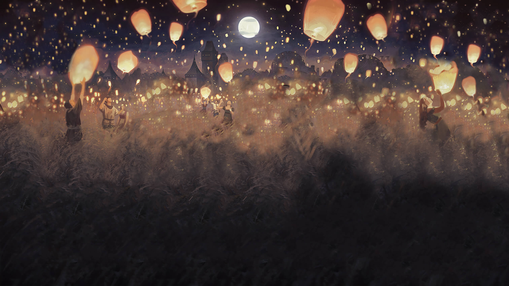
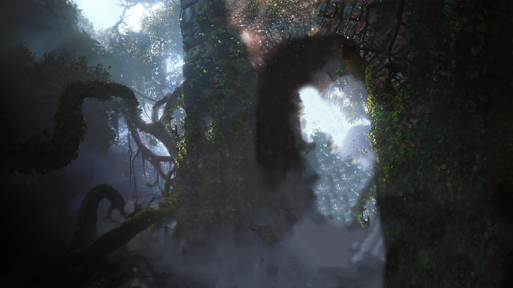
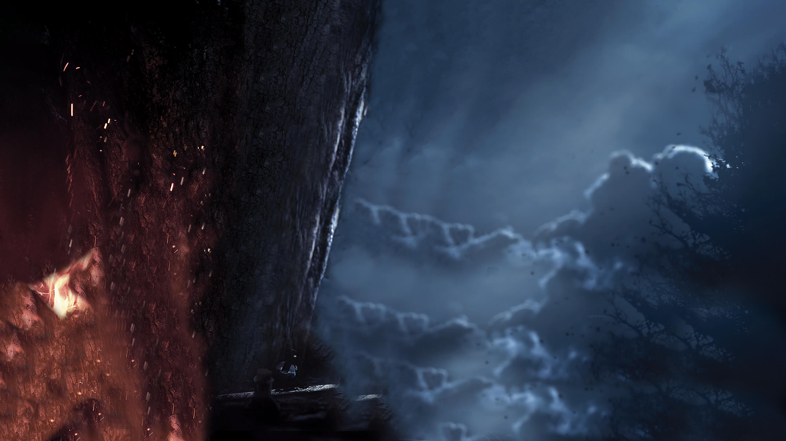
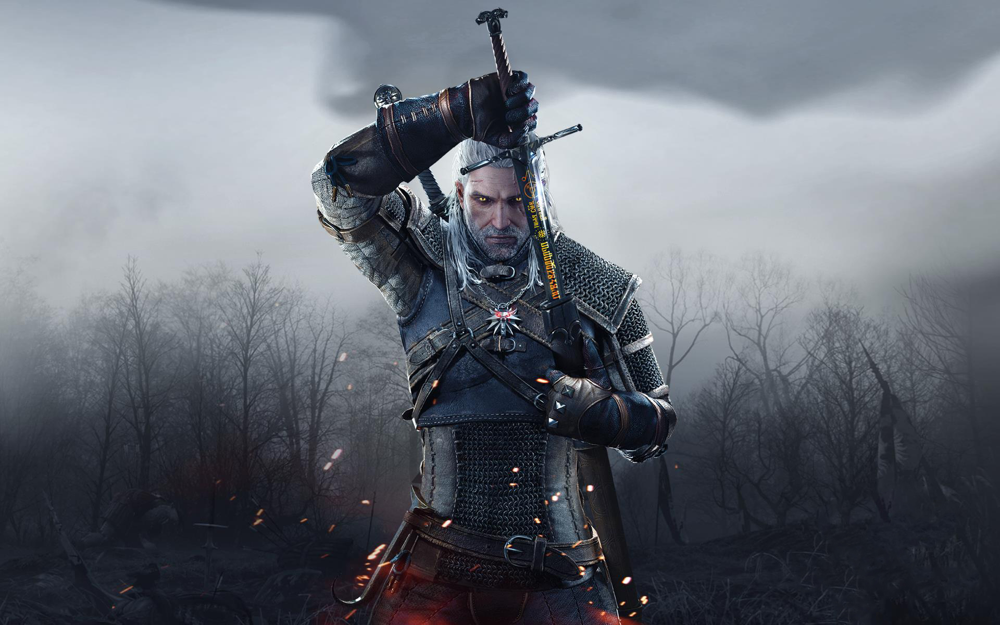
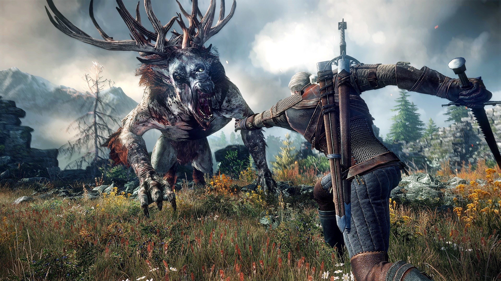

六幕剧情前因后果全景因果链
天灾前因 · 狂猎阴影与长者之血
"巫师三的世界观磅礴厚重，但驱动整部史诗前行的核心因果极其纯粹：那就是一位父亲拼尽一切寻找养女！大前因要追溯到古老的灭世预言：能冻结一切维度的极寒天灾“白霜”正在席卷多元宇宙，狂猎精灵军团的家园即将毁灭！为了逃难，狂猎之王艾瑞汀疯狂追捕流淌着时空穿越神力的“长者之血”最后继承人——希里！而作为希里唯一的养父，猎魔人杰洛特必须抢在狂猎之前找到她！"
多元宇宙的永冻极寒灾难
- 上古天灾席卷无数平行世界，生命被彻底冰封冻结
- 狂猎所在的狂猎精灵世界濒临毁灭，急需逃亡出路
掌控时空穿越维度的神力
- 希里身上流淌着精灵族最纯正的古代血脉长者之血
- 她是唯一拥有瞬间跨越时空维度、甚至关停白霜钥匙的存在
狂猎骑士团全维度猎捕
- 死灵骑士军团撕裂天空，冰霜战马踏破现实世界
- 杰洛特白狼嗅到了危险气息，踏上横跨整个大陆的寻女征途
千里寻女 · 战火大陆与旧爱重聚
"寻找希里的旅程充满人间的战火与残酷！南方帝国尼弗迦德大举北伐，战火席卷整片大陆！杰洛特与旧爱叶奈法在白果园重聚，从皇帝恩希尔手中接下寻女委托后分头行动！杰洛特只身踏入满目疮痍的威伦无人之地，与吃人肉的老巫会斗智斗勇，见证了血腥男爵一家的悲剧离合；又潜入灯红酒绿的自由之城诺维格瑞，在神殿卫队的火刑架下追寻特莉丝与丹德里恩！千难万险，只为了希里的一丝蛛丝马迹！"
尼弗迦德大帝生父委托
- 恩希尔大帝动用帝国密探寻女，叶奈法主掌魔法侦测
- 杰洛特获得最高通行令，以游侠身份地毯式搜索
威伦沼泽与血腥男爵悲歌
- 老巫会残害生灵以儿童为食，男爵夫人心智沦丧
- 杰洛特在道德两难的泥潭中挣扎，艰难拼凑希里行踪
诺维格瑞暗流与女巫猎杀
- 狂热宗教裁判所大肆屠杀非人种族与法师术士
- 联手特莉丝与盗贼工会，终于查明希里前往迷雾之岛
迷雾重逢 · 父女相拥与警报拉响
"整个游戏最催人泪下的瞬间，在迷雾之岛轰然降临！杰洛特历经千辛万苦乘船穿越迷雾，推开木屋大门，却看到希里早已冰冷地躺在床上，毫无生机！那一刻，斩杀过无数怪物的冷血白狼心碎跪地，紧紧将女儿抱在怀里，悲痛欲绝！然而奇迹发生了——魔法萤火虫唤醒了希里，女孩缓缓睁开双眼，父女紧紧相拥！但片刻温存后警报骤响：狂猎大军已追踪魔力气息降临，唯有猎魔人的老巢凯尔莫罕才能作为决战要塞！"
寻获被魔法隐匿的孤岛木屋
- 在小矮人们的指引下，杰洛特推开冰冷沉重的木门
- 看到身体僵硬没有呼吸的希里，仿佛一切努力化为泡影
跨越生死的温情相拥
- 魔法光芒重燃生机，希里睁眼看到日思夜想的养父
- 没有过多言语，一个胜过千言万语的深情拥抱洗净所有风尘
冰霜传送门撕裂天空
- 狂猎大军的幽灵船已近在咫尺，再无藏身之地
- 向全世界所有挚友发出最高求援信，决战凯尔莫罕城堡！
古堡死战 · 维瑟米尔之死与血脉暴走
"凯尔莫罕保卫战是一场惨烈至极的攻防绝战！叶奈法升起巨大的魔法穹顶，特莉丝降下漫天火雨，杰洛特、兰伯特、艾斯卡尔与各路好友在城墙下浴血奋战！然而狂猎的冰霜风暴瞬间冰封全场！狂猎将领伊勒瑞斯抓住了希里，德高望重的老猎魔人导师维瑟米尔为了保护希里，被伊勒瑞斯残忍折断了脖子！目睹如祖父般的长者牺牲，悲痛欲绝的希里长者之血彻底暴走，狂暴的毁灭尖叫几乎震碎了整座城堡，狂猎被迫狼狈撤退！"
猎魔人兄弟并肩血战寒冰恶魔
- 魔法护盾、地雷与伊格尼火海交织，抵挡如潮狂猎大军
- 终究敌不过绝对严寒的冰冻封锁，防线步步失守
维瑟米尔壮烈牺牲护幼犊
- 被伊勒瑞斯踩在脚下，至死不肯用希里交换生机
- 脖颈被折断的那一刻，整个猎魔人学派痛失慈父
撕裂时空的毁灭之声
- 希里彻底崩溃狂暴尖叫，长者之血引发天崩地裂的神力风暴
- 狂猎之王艾瑞汀在空间撕裂前仓皇逃窜，凯尔莫罕保住了！
史凯利格 · 太阳石诱敌与怒斩狂猎王
"防守永远赢不了战争，白狼展开了雷霆万钧的反击！在阿瓦拉克的指引下，杰洛特在史凯利格群岛找到了上古神器“太阳石”，召唤狂猎的幽灵舰队进入现实陷阱！女术士集结布下结界，彻底锁死了狂猎的时空退路！杰洛特手持抹满剑油的银剑，单枪匹马登上狂猎旗舰纳吉尔法号！在狂风呼啸的甲板上，杰洛特以神乎其神的猎魔人剑术，亲手斩杀狂猎之王艾瑞汀，彻底粉碎了狂猎军团的入侵神话！"
激活上古信标引君入瓮
- 诱骗狂猎将领进入狭窄海湾，女术士集结封锁时空传送门
- 切断狂猎大军撤退退路，将神级对手拖入凡人肉搏战
火印烫穿仇敌头盔报血仇
- 在鲍尔德山顶亲手将伊勒瑞斯击毙，祭奠维瑟米尔亡魂
- 折断狂猎右臂，扫平决战前一切强敌障碍
银剑终结狂猎之王艾瑞汀
- 纳吉尔法号甲板上的巅峰剑术死斗，剑刃火星四溅
- 刺穿艾瑞汀心脏，横行无数时空的狂猎噩梦彻底宣告终结！
终局抉择 · 击碎白霜与猎魔人女孩的新生
"艾瑞汀临死前的遗言揭开了最后危机：白霜天灾正从精灵高塔疯狂倾泻，整个世界马上就要被彻底冻死！希里毫不犹豫走向通往极寒风暴的时空核心！杰洛特拼死阻拦，但希里坚定地说：“这是我的宿命，但我会回来的！”在白霜的风暴中心，正是杰洛特在旅途中每一次对她的尊重、打雪仗的欢笑与无私的父爱，化成了她击碎白霜的无尽勇气！数月后，杰洛特在白果园将一把崭新的银剑交到希里手中，她终于成为了自由自在的猎魔人！"
毅然迈向白霜永冻核心
- 唯有长者之血才能彻底平息肆虐多元宇宙的灭世天灾
- 希里选择担当救世责任，独自走入毁灭风暴之中
记忆中的温暖点亮生命奇迹
- 打雪仗的欢笑、洗劫实验室的恶作剧、毫无保留的信任
- 正是杰洛特真挚的父爱，给予希里从绝境中生还的强大意志
自由翱翔的燕子
- 拒绝帝国皇位囚笼，选择当一名风餐露宿的猎魔人
- 父女策马奔向广袤无垠的天下，书写属于他们自己的自由传奇！
关键人物与核心场景档案

利维亚的杰洛特
双剑斩遍人间妖魔，心底唯系养女安危的坚毅猎魔人。

温格堡的叶奈法
杰洛特的宿命挚爱，视希里如己出、雷厉风行的强大法师。

希里雅 (希里)
长者之血继承者，历经磨难依然坚强灵动的猎魔人女孩。

维瑟米尔老爷子
凯尔莫罕的守护者与严父，用生命捍卫了希里与猎魔人的尊严。
狂猎之王 艾瑞汀
统领狂猎的冷酷君王，最终倒在杰洛特的猎魔人银剑之下。

猎魔人 希里
斩断天灾枷锁，佩上银剑与杰洛特共同驰骋大地的传奇女猎魔人。